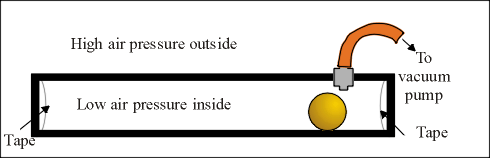
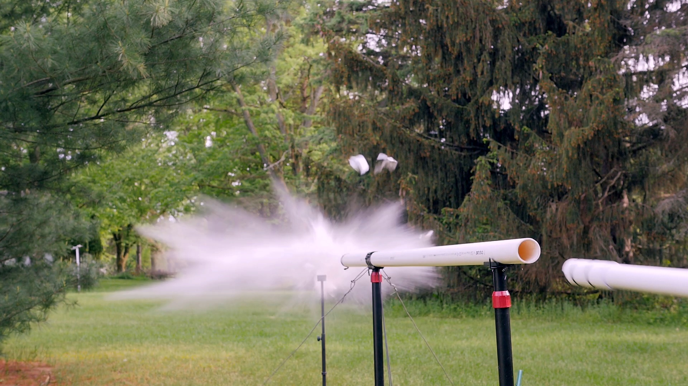
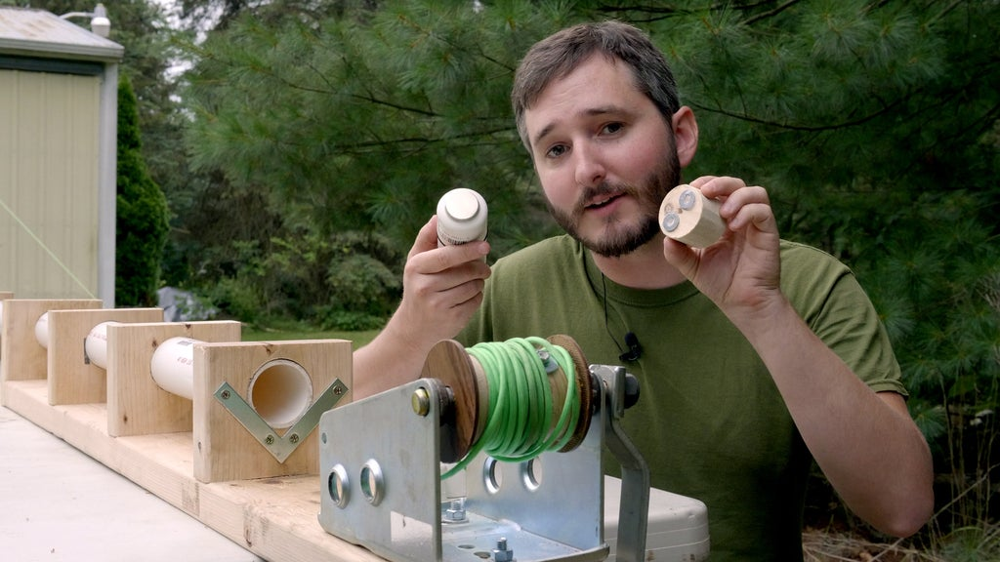
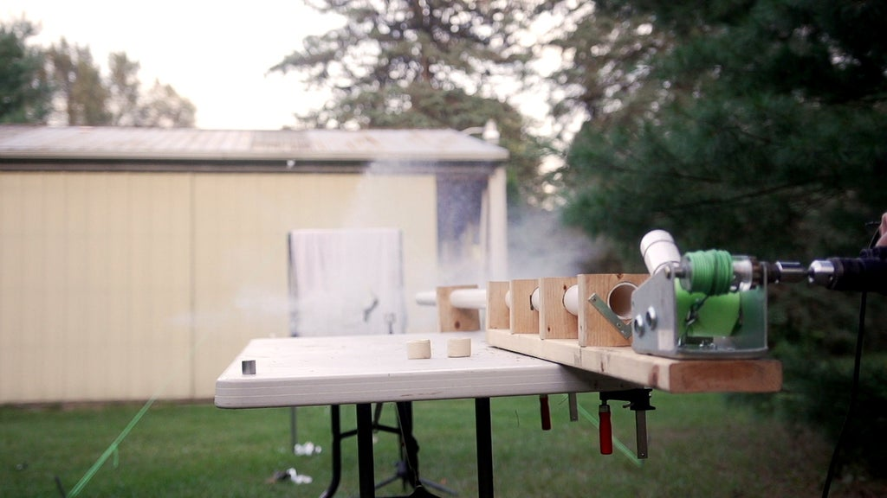
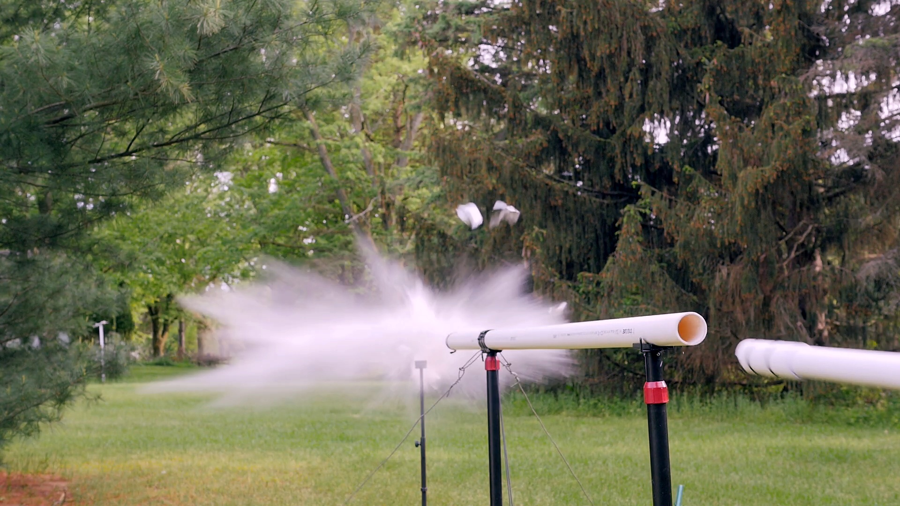
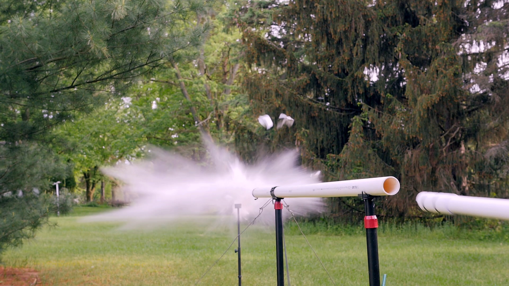

vacuum cannon absolutely destroying a can of beer
Guns are expensive, take lots of engineering, brain power and good tools. This is why it’s hard to manufacture one yourself. Laws also don’t allow weapons in places such as Romania (the government is aware of our dumbness and aggression). This doesn’t stop us from searching for alternatives, though. While big sticks and swords are nice, the idea of big boom that destroys anything in front of it sounds intriguing.As gunpowder is quite expensive here, making a projectile based weapon that requires gunpowder is out of the question. CO2 sounds like a great idea, but in order to use it effectively, you need lots of it. The best solution would be a way to propel the projectile forward without needing any tools. This is where a vacuum cannon comes in place. Cheap, simple yet effective, it almost makes you wonder why it wasn’t invented earlier. The general idea is quite simple, really.
The inner workings
Before we talk about the final design, we firstly need to understand the principles behind it. Cannons involving air typically have the projectile pushed by compressed air through a barrel. The compressed air moves through the barrel and pushes the projectile forward.
This is all just a difference in air pressure. In compressed air cannons, the compressed air has much higher pressure than the air outside, which is what makes it move. In a vacuum cannon, instead of using higher pressures, we use lower pressures than atmospheric pressure. This way, the atmosphere does all the work. You need a tube sealed on both sides , one of the sides has to be easily detached from the tube, that will be where the projectile comes out of, a way to make a vacuum in the tube and a way to let air in the tube. There are different ways of achieving each of these, but the final design is what we’ve found to be the most efficient.
The first design requires a vacuum pump and is quite cumbersome to reload.
vacuum pump operated air cannon
(In order to fire, you just poke a hole through the tape closest to the projectile)The second design closely resembles a syringe and does not require a vacuum pump. It does, however, require the tube to be fixed in place.
vacuum cannon before shooting
vacuum cannon while shooting
In this design, you use your own force to create a vacuum. There’s a piston that starts from the front of the barrel (with the projectile between the seal and the piston). This piston has some o-rings on it to make an airtight seal. In order to fire, you pull on the piston until it leaves the barrel. As the piston gets farther from its original position, it creates less and less air pressure in the tube. Once the piston leaves the barrel, air will get in the barrel and push the projectile forward and break the front seal.It does have some disadvantages: In this design, aluminum foil was still being used for the front seal. This could be fixed by using the newer way of sealing the front. The tube needs to be fixed to the ground in order to not move around. It also takes some room for you to move all the way back and the shaft you pull is quite long. You also need to lightly tape the projectile to the piston.Despite all these disadvantages, it’s still quite clever engineering that led to the final design.
The final design
vacuum cannon before shooting
vacuum cannon while shooting
This final design is an objective improvement over the previous designs, it gets rid of all disadvantages and allows for faster reloading and easier deployment.It has some clear advantages, here are a few examples:
It does not require mounting anywhere, it can simply be plopped down on a surface or even held
The crank can be spun electrically via a drill or a motor of some kind
The magnet on the front of the piston allows you to attach the projectile to the piston faster
The front of the pipe has a way faster sealing method, you just press a plastic cup on the front and you’re good to go
Conclusion & thoughts
It’s cool. Very boom boom. Easy to make, easy to operate and surprisingly powerful. You could probably make a shotgun-like projectile that holds arrows or you could use this cannon as a mortar if you’d want that. Happy terrorism engineering!
 vacuum cannon absolutely destroying a can of beer
vacuum cannon absolutely destroying a can of beer
 vacuum cannon before shooting
vacuum cannon while shooting
vacuum cannon before shooting
vacuum cannon while shooting